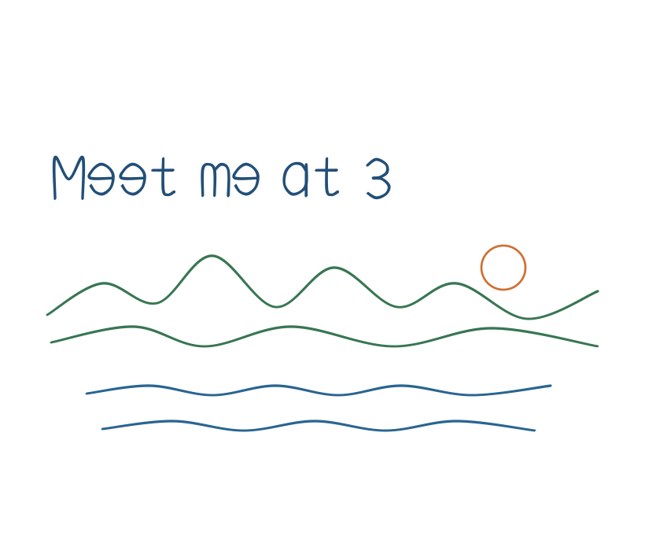

I tratti di penna restano inchiostro sulla pagina. Scrivi una breve nota, poi fai uno schizzo accanto. Usa Seleziona per spostare o ridimensionare un tratto, Lazo per prenderne alcuni insieme, e Annulla tratto per togliere l'ultimo segno.
Questa nota e questo schizzo sono stati disegnati con la penna. Sono tratti modificabili, non lettere digitate né un'immagine piatta.
Indietro: Forme.
